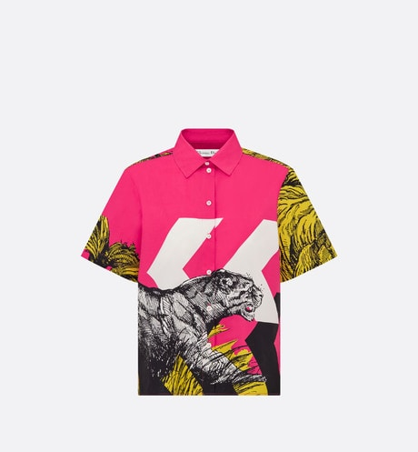
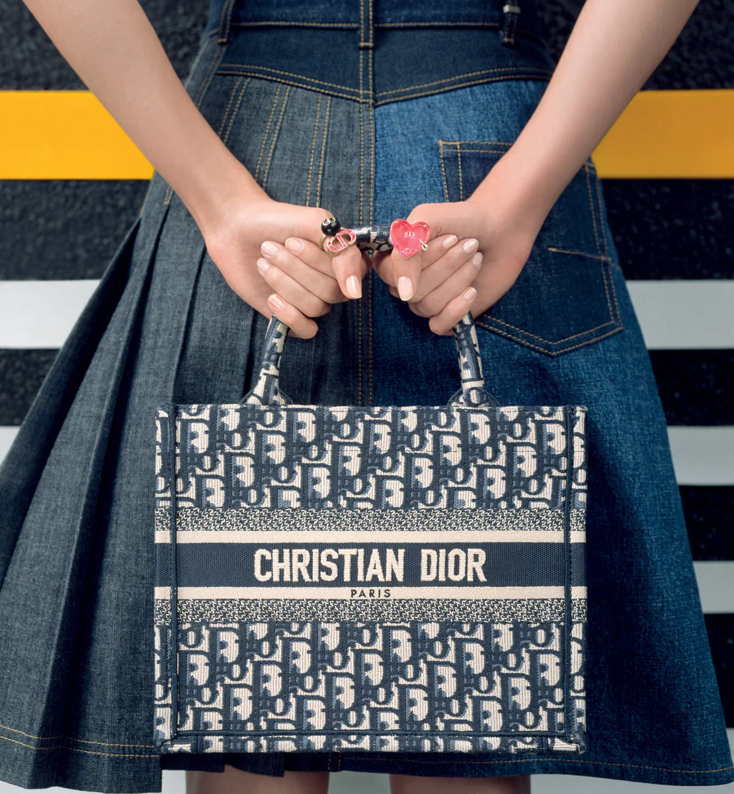
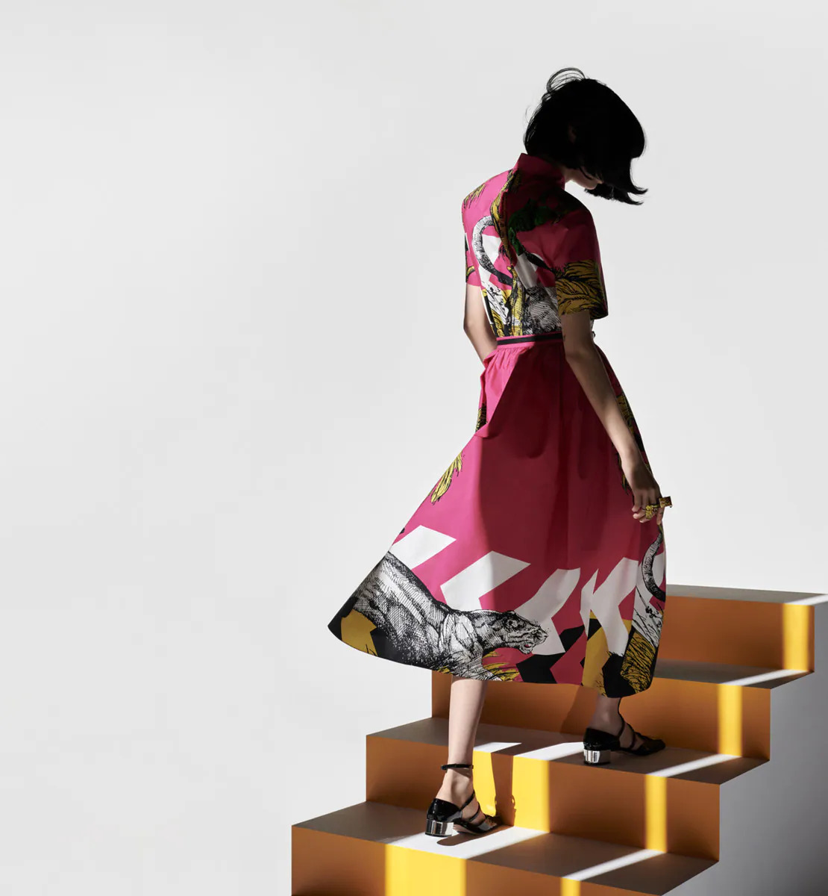
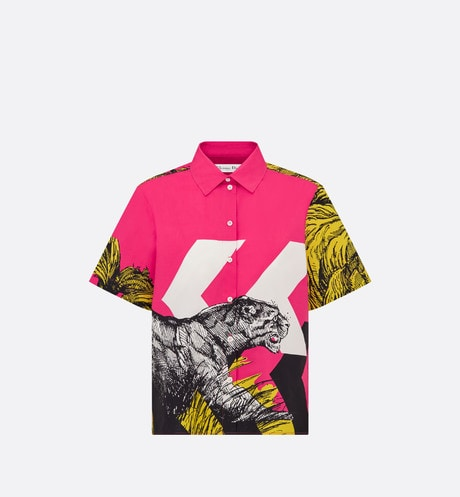
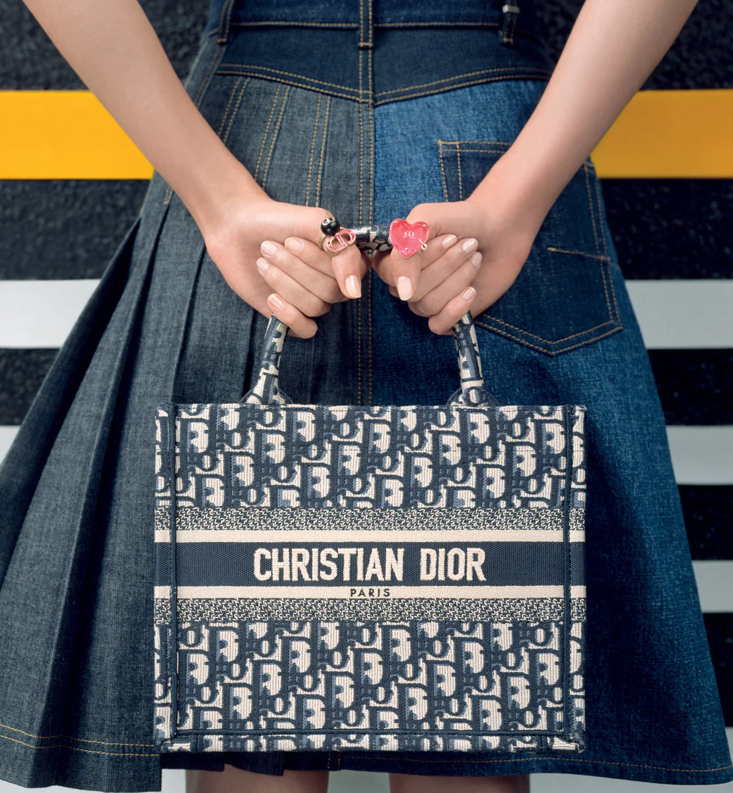
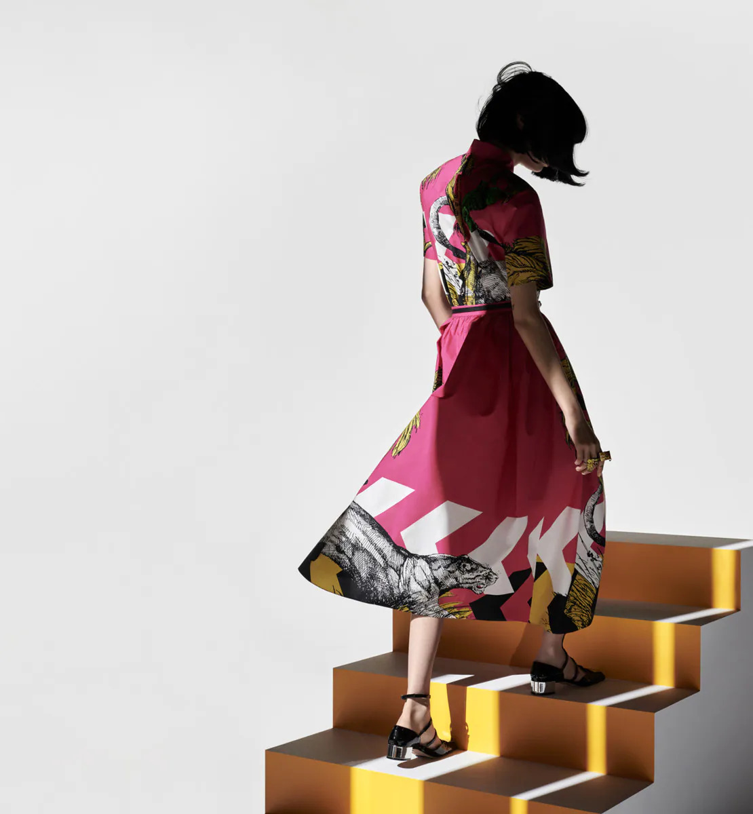
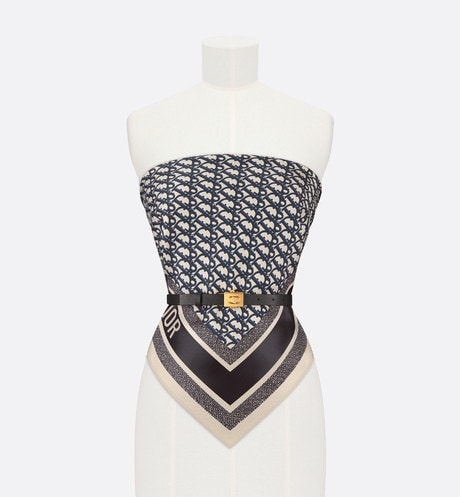
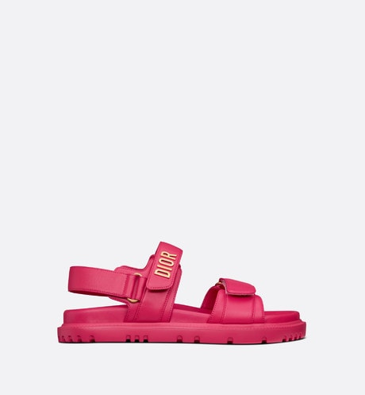
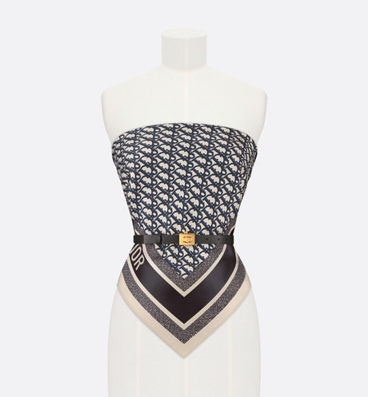
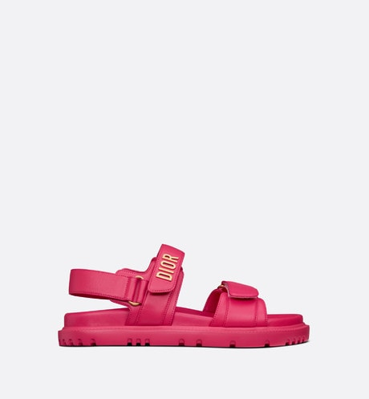

BỘ SƯU TẬP XUÂN HÈ 2022
Là sự giao thoa của những gam màu sáng, đậm, quyền lực của màu đen và
sự sang trọng của màu nude, bộ sưu tập đồ sẵn Dior xuân hè 2022 do Maria
Grazia Chiuri tưởng tượng đã truyền tải một cách chơi mới với thời trang. Một
bài ca ngợi về sự tự do và sự tự tin nhẹ nhàng.

 





 


